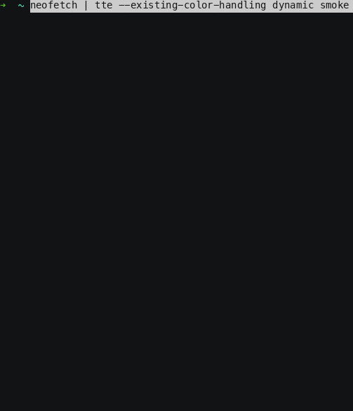
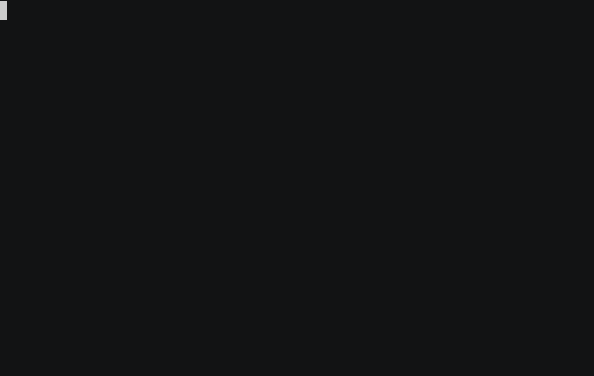
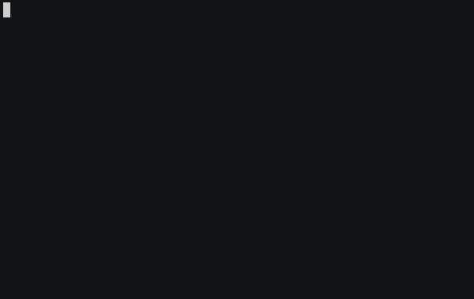
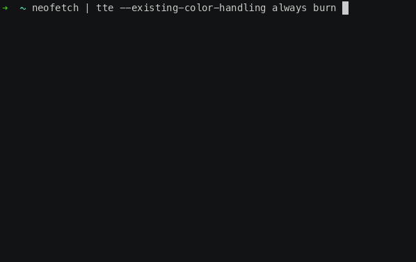
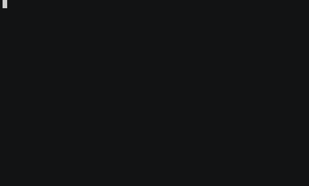

0.15.0 (Go Fetch)
Release 0.15.0
Release Summary (Shell Completion, Dynamic Colors, and Better Terminal Input)
This release is mostly about catching up on the quality-of-life work that makes TTE nicer to use in real shells with real terminal output.
There are no new built-in effects this time. Instead, TTE can now generate shell completions for bash and zsh, handle more of the ANSI escape sequence soup produced by terminal tools such as neofetch and fastfetch, and do a much better job preserving input colors in existing_color_handling="dynamic" mode.
There is also support for discovering user-provided effects from a config directory, along with a pile of engine documentation and test improvements.
Push Tab, Receive Effect
TTE can now generate shell completions:
For one-off use:
or:
If you want completions to stick around, add the relevant command to your shell startup file. The generated completion script includes discovered effects and their options, so custom effects show up there too.
One small but useful bit of polish: the zsh completion script initializes compinit and bashcompinit when needed. That means the basic eval "$(tte --print-completion zsh)" path works with less shell ceremony.
Go Fetch
TTE has supported parsing ANSI colors from input for a while, but terminal applications do more than color text. Fetch-style tools often move the cursor around to lay out a logo and system information side-by-side. Previously, TTE had no idea what to do with the control sequences fetch tools use for layout, so it treated them as text. That often led to interesting chaos as the sequences were broken apart and reassembled throughout the effect.
TTE now interprets common cursor movement CSI sequences into its virtual input canvas. That includes relative movement up, down, forward, and back; moving to the next or previous line; setting the cursor column; and jumping to an explicit row/column position:
A: cursor up
B: cursor down
C: cursor forward
D: cursor back
E: next line
F: previous line
G: set column
H/f: set row and column
In practice, those sequences let TTE reconstruct terminal layouts that are drawn out of order. When a fetch tool prints a logo, moves the cursor, then prints system details next to it, TTE can now place those characters on the intended canvas cells before the effect starts.
It also accepts common DEC private mode toggles for cursor visibility and line wrapping as no-op input state:
That does not mean TTE is a full terminal emulator. But it now understands enough of the layout language used by common fetch applications to preserve the intended shape.
The color parser also got more complete. TTE now supports 3-bit and 4-bit SGR foreground/background colors, reset sequences, and mixed style/color SGR sequences. Bold standard ANSI foreground colors are preserved as bright colors, which better matches how normal terminals display many fetch outputs.


Dynamic Colors Everywhere
In 0.12.0, TTE added --existing-color-handling with three modes:
ignore-
Strip parsed input colors and let the effect do its normal thing.
always-
Keep input colors on the characters all the time, even when that removes some of the effect's personality.
dynamic-
Let the effect decide how to use the input colors.
That last option is the interesting one, but it also requires effect-by-effect care. Some effects should keep their own colors during the action and resolve to input colors at the end. Some should use input colors the whole way. Some need a neutral fallback for uncolored input. Some need to treat background-only spaces as real input. It goes on.
This release fills in a lot of that work.
Examples:
- Burn, LaserEtch, and Matrix now process input spaces that carry parsed ANSI colors, which preserves background-color art cells.
- Beams, BinaryPath, and Overflow no longer accidentally finish uncolored input in effect-owned colors when using
dynamic. - Highlight now bases the highlight on parsed foreground colors and preserves parsed backgrounds, including background-only spaces.
- Rings, Scattered, Slice, Slide, Spray, and Wipe can now run with input colors driving the whole effect.
- Thunderstorm, Unstable, and VHSTape now start from input colors, do their effect-specific chaos, and return to the input colors or terminal default state correctly.
This is one of those changes where the feature sounds simple from the outside:
keep my colors
And then inside the engine it becomes:
preserve foreground and background independently, don't invent a foreground for background-only cells, don't erase colored spaces, keep helper/fill characters effect-owned, let uncolored input return to terminal default, and make all of that happen at the visually correct part of each effect



Your Effects Live Here Now
TTE can now discover effects from:
If XDG_CONFIG_HOME is not set, that resolves to:
Effect files are normal Python files. For example:
If the file provides a get_effect_resources() function, TTE can register it just like a built-in effect. The function returns the CLI command name, the effect class, and the config class:
After that, the custom effect can be invoked from the CLI:
The important part is that user effects now participate in the same parser-building path as built-in effects. Runtime parsing, effect help text, random-effect selection, and generated completions all build from the same discovered effect definitions.
Small API Tweaks
There are also a number of engine and documentation improvements in this release.
The final-gradient CLI arguments are now shared helpers:
All effects now use these helpers, which keeps parser defaults and help text more consistent.
RandomSequence now uses --terminal-background-color as the starting point for its reveal fade, so its effect-specific --starting-color option has been removed.
Several spanning tree generators received bug fixes and focused test coverage. The highlights:
SpanningTreeGenerator.get_neighbors()now honorsunlinked_only=False.PrimsSimpleapplieslimit_to_text_boundarymore consistently.PrimsWeightedlimits random starting-character selection to the text boundary when requested.BreadthFirstinitializes correctly whenstarting_charis omitted and records discovered characters once.AldousBroderreturns immediately once all characters are linked.
Path and scene deactivation are also more convenient. These calls now accept an object, an ID string, or no argument:
character.motion.deactivate_path()
character.motion.deactivate_path("path_id")
character.animation.deactivate_scene()
character.animation.deactivate_scene("scene_id")
The no-argument form deactivates the currently active path or scene. Event registrations for DEACTIVATE_PATH and DEACTIVATE_SCENE support the same shapes.